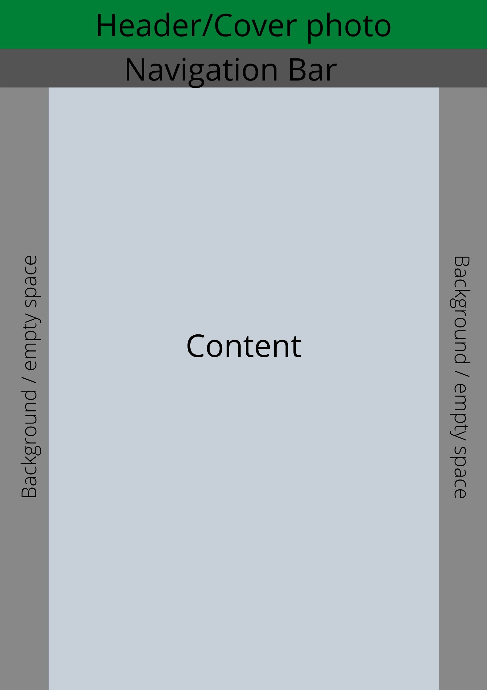

Developer Comments:
This website was designed by Tommy Cao (12931186) for the Web Systems (31268) elective subject at the University of Technology, Sydney.
Being my first experience at any kind of HTML/CSS creation (with my only other experience with coding being with the Programming Fundamentals subject I did a couple of years ago), the assignment was challenging, but fun to take on.
I initially had tried to create this bulk of this website within vim editor, through a Linux VM on windows. This proved to be much too hard and steep of a learning curve, and so I adopted for the use of the Brackets software instead (as recommended by a tutor on the discussion boards).
My final thoughts through working on this project are that although picking up the coding is simple enough,it is the matter of taking your vision and turning it into representative code that is difficult -- particularly in the small details.
This is an issue that that I have no doubt represents inexperience, and then would be traversed better with more experience and better coding vocabulary/knowledge. With all that said, it was a very pleasant and fun project to work on, and my only regret was not starting on it sooner to flesh it out more.
Technical Structure:
This website structure was designed initially to be simple, with an attempt to not over-complicate, but maintain a clean design with aesthetic colours and borders. In reality the execution was a more difficult than it seemed, particularly as my inexperience would lead to incorrect usage and cascading functions of the code.
With that said, the primary structure was designed to resemble this design:

The preferred way to format the content was for it to be done through a various amount of class tags, and styling each one as it was relevant:
| Class | Used For |
|---|---|
| top-bckgrnd | This was created to assign the top cover image for the website in an easy to change/edit manner, in addition to allowing and easy template to transfer to other pages. This is just a randomly found stock photo. |
| Nav | This refers to the navigation bar, under the cover image, that links to the other pages (fufilling assignment requirements). This was able to work with the help of W3Schools and other resources -- it was a pain! |
| current_menu | This class was created to fit into the navigation bar list easily, also allowing a good identical starting template for all pages. |
| content | This refers to the bulk of the HTML page which sits under the navigation bar and cover image. It is of "darkgray" colour and houses the majority of the consumable text, with a contrasting dark color that allows for easy to read text that holds color consistency with the empty space on the sides. Its size is 960 pixels wide, as is the general recommendation for web designers for content consumption. |
| Table | This was created to create the class for this table. |
| Span | This span was used as I was finding it difficult to indent the lists on the "Future.html" page properly with all the cascading styles and different margins. This was the easiest to result in some effect, but it is still not where I personally want it. |
Aesthetic Choice:
In the consideration of the aesthetics of this page, the overarching objective was it to look clean and minimal, but clear and easy to use.
To achieve this, I chose to use a small pool of colours that contrast to the text -- applying this principal by keeping colour consistency between text across all pages and within the navigation bar. I compliment this by the natural green image at the topin the header -- hoping to use the connotations nature and shrubbery provide to create a design that is clean and minimalistic, yet fitting to it's character and context.
Other aesthetic choices include:
- Contrasting the navigation bar well from it's backdrop and surrounding components, so that pops to users;
- Making sure the current page was highlighted by contrasting color in the navigation bar;
- Bringing left/right margins in so content is more centred, yet still left-justified to make for easy and pleasant reading.
- Making sure all sections, headings and buttons have appropriate padding and margins to seperate the functions and text from eachother, while also making it easy to read.
Font:
The font I have included within the CSS for this website involves Helvetica standard as well sans-seriff, as a back up. The colour of the text has been designed to match the empty space for a pleasing visual consistency, but also to contrast from it's background to make it easy to read.
Accessibility:
The structure of this website follows the assignment requirements of using semantic HTML, with styles referencing a separate CSS file. This benefits those who use the code in that it is easy to understand in which in-text classes reference which CSS components.
The viewport metatag (width=device-width) has been included, in addition to margin reset property on the asterisk (*) level . This was done to ensure that the content in the page would always adjust itself to fit the user's display -- it is this function, that allows this website to work just as well on a tablet or mobile device, as it would on a PC display. This includes the ability to also zoom in and out of the content on the site.
The included tables have headers that contrast from the surrounding content and are padded to account for space, in order to make the material easy to identify and follow.
Images that are used have included alt text in scenarios where the image may not load, and URL links are coded with the "target=_"blank" function to ensure it opens conveniently in a new page.
Lastly, this website has been validated by the W3 HTML and Jigsaw CSS Validators as per assignment requirements.